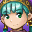

Yes. Me. What about me?
You mean, am I your father?
Hm, what was your mother's name?
No. I've only ever slept with one. Good grief. Fine, was her name Veriti?
Meh, not a lot of us super mysterious blue haired people around. Not too hard to figure out.
Yeah, and Lemurians never even leave. Except for Piers, but he would never abandon a pregnant woman.
 That's right! Captain Piers is a charming, noble, righteous man... and he's so hot! *swoon*
Oh, you remember me, do you? And it took you ages to ask about me too!
*whistle*
Mia's spawn, I take it?
Just what has Mia been saying about me?!
Alex? That Alex? The bottom dwelling scum sucker and an absolute creep who probably still wets the bed?
You poor thing.
Sigh. I'm leaving. *warps out*
Wow, is it possible his miniscule feelings are capable of being hurt? Nah, it couldn't be.
Anyway, when is that fourth game coming out?
I've been waiting so long for my chance to shine as an actual playable character, get my own official art and find true love at the end with my beloved Captain Piers...
Honestly, I'm amazed. Alex always seemed so in love with himself, to think he'd bed a woman...
Whoah, what's this about Alex bedding women?
Never mind that, he's still alive?
Surely we all knew he wasn't really dead.
Man, what a sloppy job that Wise One did, not bothering to finish him off.
Amiti?
Huh.
Hmm... well, there was this moment when I was wondering where that copy of the Sun Saga I keep in the bookshelf was...
Jenna was there, and she overheard him... things got a little heated. Honestly, Isaac, why did you even have a copy?
Well... I... it's not like I had the entire series!
Clearly, you've never seen Jenna in one of her worse moods.
Oh, great. Do I have to watch my back?
Hmm. Who'd want to get even with you, I wonder... gosh, I can't think of anyone at all.
Your sarcasm is unappreciated.
Well, it's certainly not me. I had better things to do than go after you, contrary to what fanfic writers thought. Geez, they thought I'd be obsessed with you or something.
Dark Dawn may have been a bad game, but at least it wasn't using a plotline done to death in fanfiction, huh?
Geez, okay. Let me know when you're done angsting. *warps out*
Who's your daddy, anyway?
Sure is weird how our kids never met Mia's before the journey. What's up with that?
I know. right. To think they ended up travelling with Kraden of all people and still...
Yup! Classified information!
Uhh...
Come to think of it, I don't even know who my wife is. Weird!
It's a pity Captain Piers and Takeru can't be here.
Right, but they have never appeared in the game and therefore have no face icons. Oh, how cruel, to think I can't be with my Captain Piers on these fair webpages until a fourth Golden Sun game is to come out...
At least I'm not despised by the fandom for being a nerdy Kraden wannabe.
Hey! What's wrong with wanting to be like me?!
Hmm...
*whistles*
Meh, he deserved it. I can't believe he took so long to remember me when there were rampaging monsters killing everyone. Jerk.